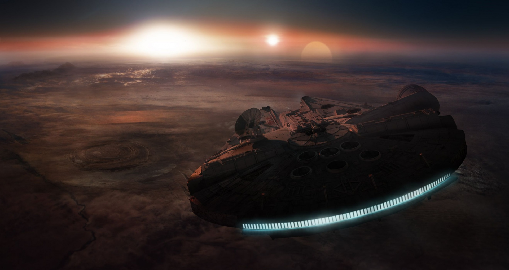

Resume
Contact
Nick Lau

| Marshall, VA 20115 |
| 540-316-8848
|
| launa@dukes.jmu.edu
|
Links
https://nicklau.myportfolio.com/
https://www.linkedin.com/in/nick-lau-8572a6200/
Professional Summary
A School of Media Arts and Design major, practicing the techniques that turn images into messages.
Offers an extensive knowledge of the Adobe Creative Cloud programs as well as marketing and
advertising knowledge. Enjoys creating in any way. Always ready to work, in a team or individually, to
solve problems and create new ideas. Easily approachable and enjoyable to work with.
Skills
- Experience with Adobe Creative Cloud progams
- Experience with Microsoft programs
- Experienced writer
- Excellent time management skills
- Knowledge of marketing and advertising techniques
Education
Bachelor of Arts: Creative Advertising
James Madison Universty - Harrisonburg, VA
- Graphic Designer for Scratch Pad (advertising club)
- Intern at Bluestone Communications (PR firm)
- Former opinion writer for The Breeze newspaper
- Member of National Society of Leadership and Success
- Member of Kappa Pi (art fraternity)
Work History
- Created engaging content for Instagram, Twitter and TikTok.
- Worked with Adobe Graphic Design Programs such as Illustrator and InDesign on a daily basis.
- Scheduled, planned, and executed multiple events/campaigns to promote UREC to students.
- Communicated effectively to schedule client meetings
Delivery Driver
Doordash - Warrenton
- Completed between 10-12 orders per shift of 6 hours.
- Completed on-time deliveries by choosing best and most efficient routes.
- Secured food to prevent loss and maintain freshness during transport.
- Communicated customer complaints, requests and feedback to company management for swift resolution.
